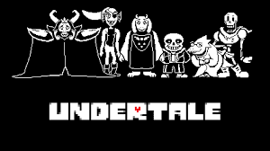

Videojuegos Jugados
Mis videojuegos favoritos suelen ser tipo Sandbox o de simulación como Minecraft, Stardew Valley y Animal Crossing, también me gusta escuchar sus bandas sonoras. Estos son algunos de los juegos que he jugado últimamente:
Marzo 2022
Leyendas Pokémon: Arceus
- Género: RPG (Role-Playing Game)
- Desarrollador: Game Freak
- Fecha de Lanzamiento: 2022
- Plataformas: Nintendo Switch
Este juego es de la octava generación de la saga principal de Pokémon y se trata de una precuela de Pokemon Diamante y Perla que tiene lugar muchos años atrás.
Banda Sonora
Diciembre 2020
Undertale

- Género: RPG
- Desarrollador: Toby Fox
- Fecha de Lanzamiento: 2015
- Plataformas: PC, PS5, Xbox Series, Nintendo Switch
Este juego trata sobre un niño que ha caido al subsuelo donde conoce a muchos personajes extraños e interesantes.